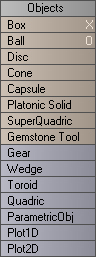
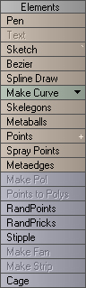

Lightwave/Create Tools
Overview
Work in Progress
This Article describes all the buttons in the Create Tooltab. All explanations are to 'the best of my knowledge'. I don't claim to be a Lightwave Guru
but I do know what some of the buttons do.
The Object Tools
The object tools give you the option to create predefined primitives. Use these together to make the model more complete. You can use the mouse to create any of these primitives, or if you prefer a much more fine control, you may press 'N' to bring up the object measurement perameters.

|
- Box
- Creates a normal box. The box can be 2D as well so that you just get the 4 points on 1 side. Creating a box is the most simple thing you can do in Lightwave.
- Ball
- Creates either a 3D ball, or a 2D circle. Press 'N' to control sides and segments. The more of each, the more 'round' it will look.
- Disc
- The disc tool creates a cylinder. Again, use 'N' to control sides, and segments. The more segments you have on a disc, the more you can bend it.
- Cone
- Creates a cone. Has a base that is the same as the disc, but tapers the top to a point.
- Capsule
- Not sure what this one does, chances are you'll never need it.
- Platoric Solid
- Not too sure of the explanation for this one, but it allows you to create several different types of objects.
Tetrahedron, Cube, Octahedron, Cubeoctahedron, Icosehedron, Dodecahedron, and Icosidodecahedron. - Super Quadric
- Not sure about this one.
- Gemstone Tool
- You can create gemstones with it. They have a tapered end like a pyramid on one side and a diamond like look at the other.,
- Gear
- Allows you to create a gear with set dimensions and teeth.

|